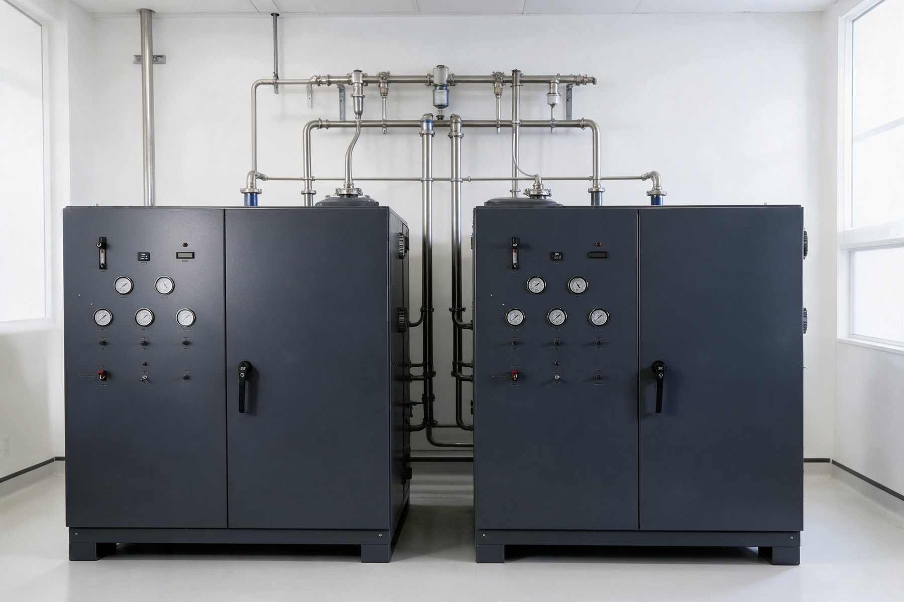
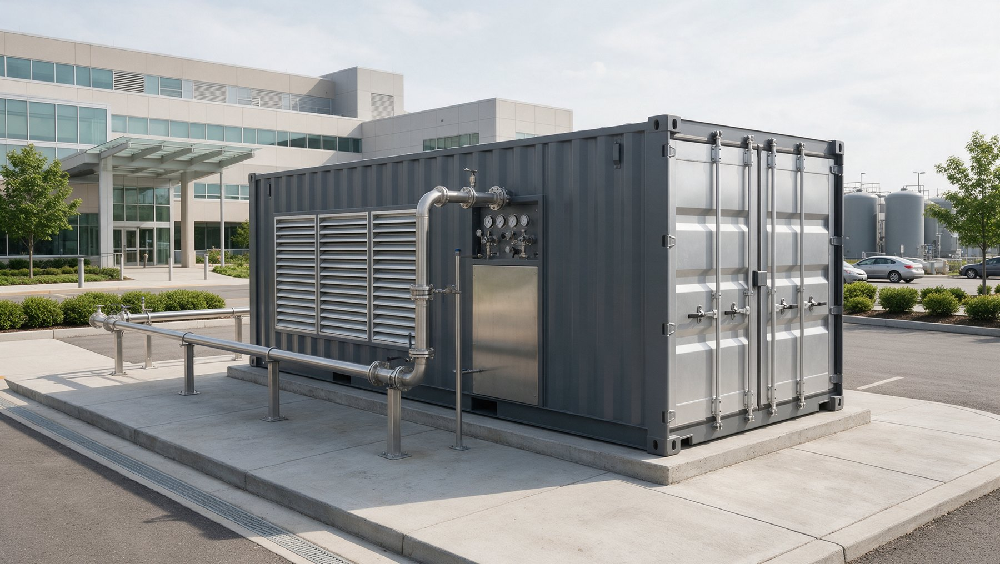

Systems
Which oxygen generation system fits your facility's demand?
Six models from 30 to 180 liters per minute, each with storage, purity monitoring and alarms in one cabinet, and each specified as part of a redundant supply arrangement. Larger demand pairs cabinets.
- Product gas stored at 165 PSI, regulated to pipeline pressure
- Real-time oxygen purity readout with local and master alarm outputs
- Space gray cabinet, sized for the plant room you have

The range
Meridian Series M
Oxygen generation capacity is the sizing question. Everything else is common across the range: each cabinet is a complete oxygen production unit.
| Model | Oxygen flow rate | Typical fit | Storage | Monitoring |
|---|---|---|---|---|
| Meridian 30 | 30 liters per minute | Surgery center, clinic, small hospital second source | 165 PSI ASME receiver | Purity, pressure, alarms |
| Meridian 60 | 60 liters per minute | Community hospital second source | 165 PSI ASME receiver | Purity, pressure, alarms, control unit |
| Meridian 90 | 90 liters per minute | Regional hospital, intensive care unit support | 165 PSI ASME receiver | Purity, pressure, alarms, control unit |
| Meridian 120 | 120 liters per minute | High-demand facility | 165 PSI ASME receiver | Purity, pressure, alarms, control unit |
| Meridian 150 | 150 liters per minute | Large hospital, multi-source arrangement | 165 PSI ASME receiver | Purity, pressure, alarms, control unit |
| Meridian 180 | 180 liters per minute | Enterprise and campus | 165 PSI ASME receiver | Purity, pressure, alarms, control unit |
Flow rates and storage pressure are platform specifications. Electrical requirements, footprint, heat rejection and sound levels are in the value analysis packet for each model.
Sizing
How do we size an oxygen plant for your facility?
By peak calculated demand, not average draw. The code requires each source in a multi-source arrangement to carry the full system demand on its own, so a facility is sized on its worst hour, and the redundancy configuration is decided before a cabinet is chosen. Published sizing guidance puts a moderate-acuity patient on high-flow support near 16.5 liters per minute of oxygen, and a simple facility estimate adds a base allowance per bed to a per-outlet allowance for intensive care and operating rooms.
Your value analysis packet includes the sizing worksheet, the oxygen flow rate at each stage, the oxygen storage tank volume, the oxygen regulator and pipeline pressure, and the electrical load the plant room must supply.
Continue

What ships with every system
The parts a brochure leaves out
The generator is a third of the installation. These are the other two thirds.
Cylinder header
Oxygen backup systems are not optional. A high-pressure cylinder header sized for one average day of supply, as the code requires for the second source. Header bars, brackets and a changeover manifold are specified with the system.
Master alarm integration
Concentration below 91 percent, unit isolated, header in use, header below a day's supply, unexpected supply change, low common-line pressure. Wired to your master alarm panels by your medical gas contractor, specified by us.
Air pretreatment
Intake filtration, refrigerated drying and coalescing filtration ahead of the sieve beds. Feed air quality decides oxygen generator efficiency and the difference between a ten-year system and a two-year one, so it is in the scope, not on the options list.
Remote monitoring
Oxygen monitoring systems report purity, pressure and alarm states to the service team, so oxygen generator maintenance runs on data and your hospital maintenance team is never the first to find a fault. One oxygen monitoring system, read by people who service the equipment. The service contract reads the trend line and schedules the visit before the alarm sounds.

No plant room?
Containerized systems
Some facilities have no room in the central plant. A containerized unit with the generator, receiver, air compressor and vacuum in one enclosure sits on a pad outside and ties into the emergency oxygen supply connection with minimal piping change, which keeps oxygen generator installation short. Facilities with existing oxygen storage tanks keep them in service as the second source. Ask for the containerized option in the packet.
Ask about containerized units